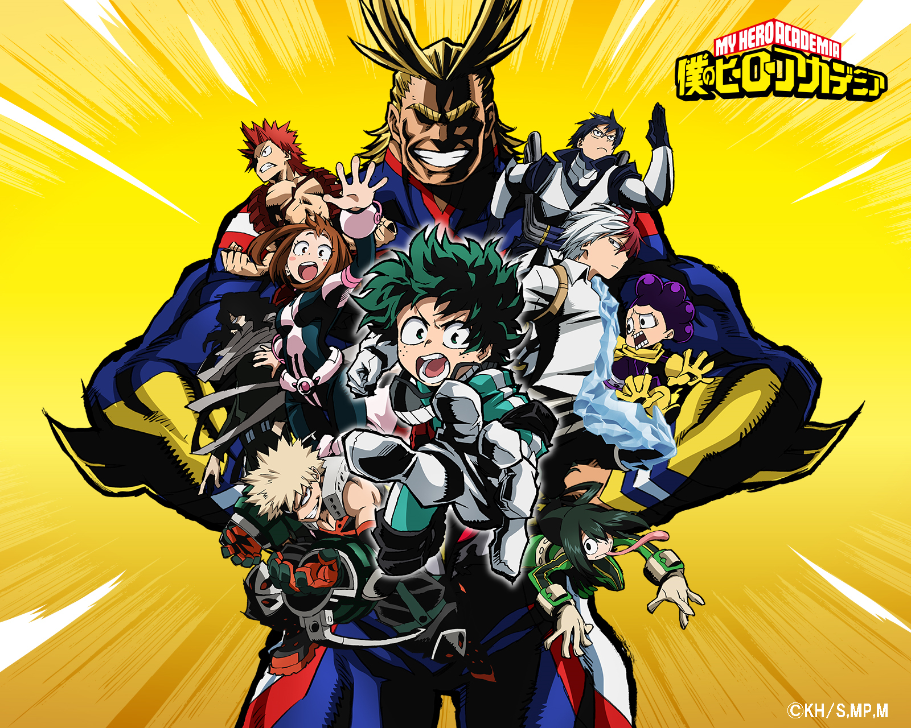

Boku no Hero Academia, também conhecido como My Hero Academia, é uma série de mangá escrita e ilustrada por Kōhei Horikosh.
Os capítulos do mangá são serializados na revista Weekly Shōnen Jump desde julho de 2014,
e foram compilados em 14 volumes em formato tankōbon pela editora Shueisha. A série é licenciada e publicada no Brasil pela editora JBC.
A história segue Izuku Midoriya, um menino que nasceu sem superpoderes em mundo que é normal tê-los,
mas mesmo assim sonha em se tornar um super-herói,
e é observado pelo maior herói do mundo que compartilha os seus poderes com Izuku depois de reconhecer o seu valor
e matricula-lo em uma escola para heróis em formação.